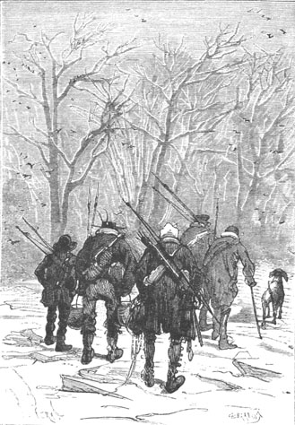

From this moment, a day did not pass without Pencroff going to visit what he seriously called his “cornfield.” And woe to the insects that ventured there. No mercy awaited them.
About the end of the month of June, after endless rains, the frost definitely came on, and on the 29th a Fahrenheit thermometer would have registered only 20° above zero (6.67° centigrade below zero).
The next day, June 30th, a day which corresponds to December 31st of the northern year, was a Friday. Neb made the observation that the year ended on a bad day; but Pencroff replied that naturally the next year would begin on a good day, which was better.
In any event, it began with a very brisk frost. Ice floes piled up at the mouth of the Mercy and the lake was not long in becoming frozen along its entire extent.
They renewed their provision of fuel during several breaks in the weather. Pencroff had transported enormous rafts of wood to their destination without waiting for the river to freeze. The current was a tireless motor and it was used to cart the floating wood up to the moment when the frost blocked it. To the fuel furnished so abundantly by the forest, they also added several cartloads of coal for which they had to go to the foot of the buttresses of Mount Franklin. This powerful coal heat was well appreciated during the cold weather which on July 4th fell to 8° Fahrenheit (13° centigrade below zero). A second chimney had been installed in the dining room and there they all worked together.
During this period of frost, Cyrus Smith had to congratulate himself for having diverted a small stream from Lake Grant to Granite House. Drawn as a liquid from under the frozen surface, it was then conducted by the old passageway to an interior reservoir which had been excavated in a corner of the rear storeroom and whose overflow escaped by the well to the sea.
During this period, the weather being extremely dry, the colonists, dressed as well as possible, resolved to devote a day to the exploration of that part of the southeast of the island between the Mercy and Cape Claw. It was a vast marshy terrain which would make for good hunting because of the many aquatic birds there.
They had to count on an eight to nine mile trip to get there as well as to return, and consequently it would take a full day. Since it was also an exploration of an unknown portion of the island, the entire colony took part in it. Hence on the 5th of July, at six in the morning, with dawn barely breaking, Cyrus Smith, Gideon Spilett, Herbert, Neb and Pencroff, armed with spears, collars, bows and arrows, and supplied with sufficient provisions, left Granite House, preceded by Top who skipped about in front of them.
They took the shortest route and the shortest route was to cross the Mercy over the ice floes then blocking it.

The shortest route was to cross the Mercy.
“But,” the reporter justly noted, “this cannot replace a genuine bridge.”
So the construction of a “genuine” bridge was recorded as one of the works for the future.
It was the first time that the colonists set foot on the right bank of the Mercy and they ventured among large and superb conifers which were then covered with snow.
But they had not gone half a mile when, from a thick bush, an entire family of quadrupeds fled from where they lived, provoked to flight by Top’s barks.
“Ah! They could be called foxes!” cried Herbert, when he saw the entire band dash off so quickly.
They were in fact foxes, but foxes of a very large size. They made a sort of barking that astonished Top himself because he stopped in his pursuit and gave these fast animals the time to disappear.
The dog was right to be surprised since he did not know natural history. But by their barks, these foxes with a reddish grey fur and black tails that ended in a white tassel, revealed their origin. Herbert, without hesitating, gave them their true name of “colpeos”. These colpeos are frequently encountered in Chile, the Falkland Islands and in all American localities between the 30th and 40th parallels. Herbert regretted very much that Top had not been able to get hold of one of these carnivores.
“Are they good to eat?” asked Pencroff, who never considered the representatives of the fauna of the island except from his special point of view.
“No,” replied Herbert, “but zoologists have not yet found out if the pupil of these foxes is diurnal or nocturnal and if it isn’t correct to classify them in the genus dog, properly called.”
Cyrus Smith could not prevent a smile on hearing the lad’s thoughts, which attested to a serious mind. As to the sailor, from the moment that these foxes could not be classified in the genus edible, they were of little importance to him. Nevertheless, when a poultry yard would be established at Granite House, it was noted that it would be good to take several precautions against possible visits from these plunderers on four feet. This no one contested.
After having turned Flotsom Point 1, the colonists found a long beach which was washed by the vast sea. It was then eight o’clock in the morning. The sky was very clear such as comes from a prolonged severe frost; but, excited by their journey, Cyrus Smith and his companions did not feel the weather’s sting too vividly. Besides, the wind was not blowing, a circumstance which rendered the low temperature infinitely more bearable. A brilliant sun, but without heating action, then rose from the ocean, its enormous disk balanced on the horizon. The sea formed a tranquil sheet, blue as a Mediterranean gulf when the sky is clear. Cape Claw, curved in the form of a yataghan, was clearly visible about four miles away to the southeast. To the left, the border of the marsh was abruptly interrupted by a small point which the solar rays, at the moment, patterned into a flash of fire. Certainly in this part of Union Bay, with no cover from the open sea, not even a reef of sand, any vessels battered by the winds from the east would find no shelter. They sensed from the tranquility of the sea not disturbed by shallows, from its uniform color which had no trace of a yellowish nuance and from the absence of any reef, that this coast was abrupt and that the ocean covered up a deep abyss there. Behind them in the west, at a distance of four miles, the first line of trees of the forests of the Far West was visible. They could believe, so to speak, that they were on the desolated coast of some Antarctic island that the ice floes had overrun. The colonists stopped here for a meal. A fire was started with brushwood and dry seaweed and Neb prepared a meal of cold meat to which he added several cups of Oswego tea.
While eating, everyone looked around. This part of Lincoln Island was really sterile and contrasted with the entire western region. This led the reporter to make this observation, that if chance had first thrown the castaways on this shore, they would have had a deplorable idea of their future domain.
“I do not think that we would have been able to reach it,” replied the engineer, “because the sea is too deep here and it would offer us no rock on which to take refuge. In front of Granite House at least, there were some reefs, an islet, which multiplied the chances of safety. Here nothing but the abyss.”
“It is rather strange,” noted Gideon Spilett, “that this relatively small island presents such varied terrains. This diversity appears logically only on continents of a certain size. One could truly say that the Western part of Lincoln Island, so rich and so fertile, is washed by the warm waters of the Gulf of Mexico and that the shores of the north and the southeast reach out to a sort of Arctic Sea.”
“You are right, my dear Spilett,” replied Cyrus Smith. “That is an observation that I have also made. I find this island strange in its form and in its nature. One would say, in short, that it has all the aspects of a continent, and it would not surprise me if it had been a continent once upon a time.”
“What! A continent in the middle of the Pacific?” cried Pencroff.
“Why not?” replied Cyrus Smith. “Why could not Australia, New Ireland and all that the English geographers call Australasia, united to the archipelagos of the Pacific, have formed in the past a sixth part of the world as important as Europe or Asia, as Africa or the two Americas? I feel that all these islands that emerge from this vast ocean are the summits of a continent which, though now engulfed, was above water in prehistoric times.”
“The way Atlantis once was,” replied Herbert.
“Yes, my child... if it existed.”
“And was Lincoln Island part of this continent?” asked Pencroff.
“That is possible,” replied Cyrus Smith, “and that would explain this diversity of productions that we see on its surface.”
“And the considerable number of animals that still live here,” added Herbert.
“Yes, my child,” replied the engineer, “and you furnish me with a new argument to apply to my thesis. It is certain, from what we have seen, that there are numerous animals on the island and, what is even stranger, that the species are so extremely varied. That is why I think that Lincoln Island could once have been part of some vast continent which little by little sank below the Pacific.”
“Then one fine day,” answered Pencroff, who was not absolutely convinced, “the remainder of this ancient continent will disappear in its turn and there will no longer be anything between America and Asia.”
“Yes,” replied Cyrus Smith, “but there will be new continents which millions upon millions of animalcules are working to build at this moment.”
“And what are these masons?” asked Pencroff.
“The coral infusoria,” replied Cyrus Smith. “It is they who made, by constant work, Reao Island, the atolls and other numerous coral islands of the Pacific Ocean. Forty seven million of these infusoria weigh a grain 2 nevertheless, with the ocean salt that they absorb, with the solid elements that they assimilate from the water, these animalcules produce lime and this lime forms enormous submarine substructures whose hardness and compactness are equal to that of granite. Formerly, during the first stages of creation, nature, using fire, produced land by upheaval; but now it charges these microscopic animals to replace this agent whose dynamic power in the interior of the globe has evidently diminished—this is proved by the large number of volcanos on the surface of the earth that are actually extinct. And I really believe that in later centuries, as infusoria are added to infusoria, this Pacific will change one day into a vast continent which new generations will live on and civilize in their turn.”
“That will take long!” said Pencroff.
“Nature has the time for it,” replied the engineer.
“But what will be the good of new continents?” asked Herbert. “It seems to me that the actual extent of the habitable world is sufficient for humanity. Nature does nothing uselessly.”
“In fact nothing is useless,” replied the engineer, “but here is how one can explain the necessity for new continents in the future and precisely on this tropical zone occupied by the corral islands. At least this explanation seems plausible to me.”
“We are listening, Mister Cyrus,” replied Herbert.
“Here is my idea: Scientists generally admit that one day our world will end, or rather that animal and vegetable life will no longer be possible on it due to the intense cold to which it will be subjected. What they are not in agreement on is the cause of this cold. Some think that it will result from the lower temperature that the sun will experience after millions of years; others think that it will result from the gradual extinction of the interior fires of our globe which have a more pronounced influence on it than is generally supposed. I myself hold to this last hypothesis and I base it on the fact that the moon is really a frozen star which is no longer habitable even though the sun continues to shed the same amount of heat on its surface. If therefore the moon is cold, it is because these interior fires, to which all stars of the stellar world owe their origin, are completely extinct. In short, whatever the cause, our globe will freeze one day but this freezing will only come on little by little. What will then happen? The temperate zones, within a longer or a shorter time, will be no more habitable than the polar regions are. Thus the human population, as well as the animal groups, will flourish at those latitudes more directly subject to the solar influence. An immense migration will occur. Europe, Central Asia and North America will be abandoned little by little, as will Australasia and the lower parts of South America. Vegetation will follow the human emigration. The flora will recede to the equator at the same time as the fauna. The central parts of South America and of Africa will become the continents best to live in. The Laplanders and the Samoyeds will find the climatic conditions of the polar sea on the shores of the Mediterranean. Who can tell us that at this time the equatorial regions will not be too small to contain terrestrial humanity and to nourish it? Now, why won’t a clairvoyant nature, in order to give refuge to all of this vegetable and animal migration, lay the foundation, even at this moment, of a new continent under the equator and won’t it charge the infusoria to construct it? I have often reflected on all of these things, my friends, and I seriously believe that the aspect of our globe will one day be completely transformed, that as a result of the raising of new continents, the seas will cover the old ones and that, in future centuries, Columbuses will discover the islands of Chimborazo, the Himalayas or Mount Blanc, the remainders of an America, an Asia and a Europe engulfed. Then finally, these new continents in their turn will become uninhabitable; the heat will be extinguished like the heat from a body abandoned by the soul, and life will disappear, if not absolutely from the globe, at least for a time. Then perhaps our spheroid will rest and from death it will resuscitate one day under superior conditions! But all this, my friends, is the secret of the Author of all things, and in talking about the work of the infusoria, I have let myself be carried away a little too far perhaps in peering into the secrets of the future.”
“My dear Cyrus,” replied Gideon Spilett, “these theories are prophecies for me and they will be accomplished one day.”
“That is the secret of God,” said the engineer.
“All this is well and good,” Pencroff then said, having listened with all ears, “but tell me, Mister Cyrus, if Lincoln Island is constructed by your infusoria?”
“No,” replied Cyrus Smith, “it is strictly of volcanic origin.”
“Then it will disappear one day?”
“That is probable.”
“I hope that we will no longer be here.”
“No, I assure you, Pencroff, we will no longer be here since we have no wish to die here and that in the end we will extricate ourselves.”
“While waiting,” replied Gideon Spilett, “we will carry on as if for eternity. It will not do to take half-way measures.”
That ended the conversation. The meal was completed. The exploration was continued and the colonists arrived at the beginning of the marshy region.
It was a real marsh whose area measured twenty square miles up to the rounded shore which marked the southeast end of the island. The soil was formed of a silicious clay and mixed with vegetative debris. Conferva, juncaceae, carex, bulrush, and some layers of grass here and there covered it with a thick carpet. Frozen ponds scintillated in many a place under the sun’s rays. Neither rains nor rivers swelled by a sudden rise had been able to form these reservoirs of water. They naturally concluded that this marsh was fed by infiltrations from the soil, which was the case. They even feared that these miasmas could cause marsh fever during the hot weather.
Above the aquatic grass, on the surface of the stagnant waters, fluttered a world of birds. Marsh hunters would not have lost a single shot. Wild duck, pintail, teal and snipe lived there in flocks and these fearless birds could easily be approached.
A gunshot would certainly have hit several dozens of the birds, so tight were their ranks. They had to be content with arrows. The result was mediocre but the silent arrow had the advantage of not frightening these birds who would have dissipated to all corners of the of the marsh from the detonation of a gun. The hunters were therefore content, for the time being, with a dozen duck who had white bodies and cinnamon waists, green heads, black, white and reddish wings and flattened beaks that Herbert recognized as “Tadorns.” Top skillfully helped with the capture of these birds whose name was given to this marshy part of the island. Thus the colonists had there an abundant reserve of water fowl. When the time came, it would be appropriate to exploit this and it was likely that several of these species could become, if not domesticated, at least acclimatized to the neighborhood of the lake, which would put them within the immediate reach of the consumers.
Around five o’clock in the evening, Cyrus Smith and his companions took the road back to their dwelling, crossing Tadorn’s Marsh and passing over the Mercy on the bridge of ice.
At eight o’clock in the evening they were all back at Granite House.